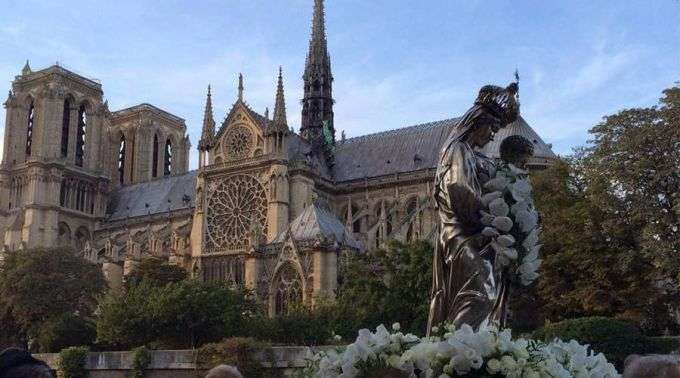

Paris




Nenhum outro destino faz o coração
suspirar como a simples menção a Paris. A cidade encanta com sua extraordinária arte, arquitetura,
cultura e culinária, e oferece também uma magia mais sutil a ser explorada: pitorescas vielas de
paralelepípedo, pâtisseries de esquina e bistrôs aconchegantes para saborear uma taça de vinho
beaujolais. Prepare-se para conhecer Paris do seu jeito.
Torre Eiffel
Principal símbolo de Paris, a Torre
Eiffel foi planejada para o centenário da Revolução Francesa. Com cerca de 300 metros de altura, o ponto
turístico oferece uma das melhores vistas de Paris durante o dia e à noite (quando acontece um
espetáculo de luzes).
Arco do Triunfo
Criada a mando de Napoleão Bonaparte, o
Arco do Triunfo celebra a glória dos heróis de guerra. São 50 m de altura e diversas esculturas
adossadas aos pilares. Do terraço panorâmico do monumento, é possível admirar a Champs-Elysées.
Avenida Champs-Élysées
Conhecida pelos franceses como “A mais
bela avenida do mundo”, a Champs-Elysées é um dos endereços mais movimentados e caros de Paris. São 2km
repletos de lojas de todos os tipos — entre elas grifes, cinemas, cafés e restaurantes.